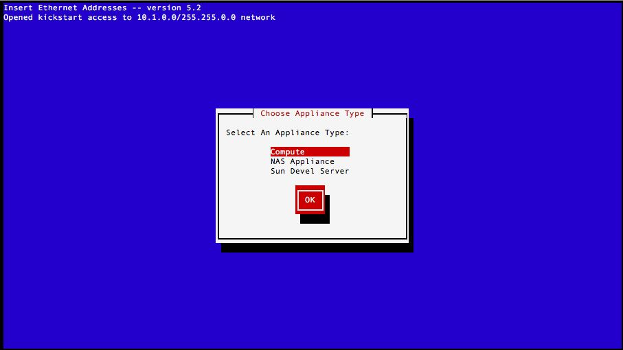

| JumpStart Users Guide:
| ||
|---|---|---|
| Prev | Chapter 2. Using the JumpStart Roll | Next |
Once the frontend node has Solaris support installed, you can install Solaris based backend nodes using the same procedure that you'd use for installing Linux nodes.
Run
# insert-ethers --os=sunos |

Choose the appropriate appliance that you'd like to install
Boot up your node, and set it to boot from PXE
Wait till the node is detected.
Wait till the node requests the jumpstart configuration. (insert-ethers shows a (*) beside the discovered node to indicate that it was given the jumpstart configuration )
Quit insert-ethers (F8)
 | Jumpstarting through Rocks supports only NFS based transport for installation. Since an NFS server is decidedly less scalable than an HTTP server with bittorrent support, there is a good chance that the server can become overwhelmed by reasonably few NFS clients hitting the server. It is not advisable to install more than 4 clients at a time, unless you have a really powerful NFS server. |